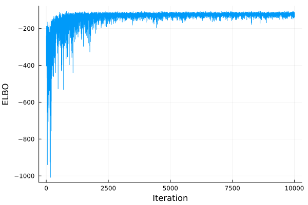
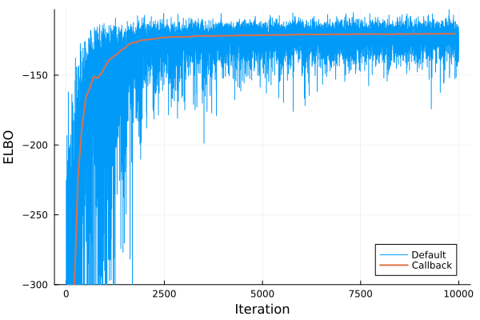
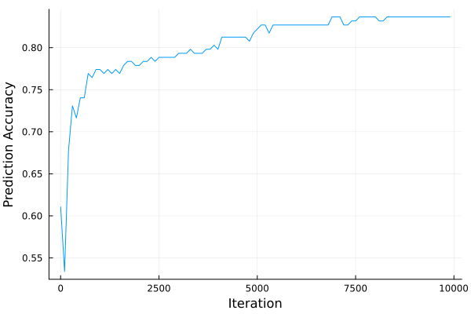

Basic Example
In this tutorial, we will demonstrate the basic usage of AdvancedVI with LogDensityProblem interface.
Problem Setup
Let's consider a basic logistic regression example with a hierarchical prior. For a dataset $(X, y)$ with the design matrix $X \in \mathbb{R}^{n \times d}$ and the response variables $y \in \{0, 1\}^n$, we assume the following data generating process:
\[\begin{aligned} \sigma &\sim \text{LogNormal}(0, 3) \\ \beta &\sim \text{Normal}\left(0_d, \sigma^2 \mathrm{I}_d\right) \\ y &\sim \mathrm{BernoulliLogit}\left(X \beta\right) \end{aligned}\]
The LogDensityProblem corresponding to this model can be constructed as
using LogDensityProblems: LogDensityProblems
using Distributions
using FillArrays
struct LogReg{XType,YType}
X::XType
y::YType
end
function LogDensityProblems.logdensity(model::LogReg, θ)
(; X, y) = model
d = size(X, 2)
β, σ = θ[1:d], θ[end]
logprior_β = logpdf(MvNormal(Zeros(d), σ), β)
logprior_σ = logpdf(LogNormal(0, 3), σ)
logit = X*β
loglike_y = mapreduce((li, yi) -> logpdf(BernoulliLogit(li), yi), +, logit, y)
return loglike_y + logprior_β + logprior_σ
end
function LogDensityProblems.dimension(model::LogReg)
return size(model.X, 2) + 1
end
function LogDensityProblems.capabilities(::Type{<:LogReg})
return LogDensityProblems.LogDensityOrder{0}()
end
nothingSince the support of σ is constrained to be positive and most VI algorithms assume an unconstrained Euclidean support, we need to use a bijector to transform θ. We will use Bijectors for this purpose. This corresponds to the automatic differentiation variational inference (ADVI) formulation[KTRGB2017].
In our case, we need a bijector that applies an identity map for the first size(X,2) coordinates, and map the last coordinate to the support of LogNormal(0, 3). This can be done as follows:
using Bijectors: Bijectors
function Bijectors.bijector(model::LogReg)
d = size(model.X, 2)
return Bijectors.Stacked(
Bijectors.bijector.([MvNormal(Zeros(d), 1.0), LogNormal(0, 3)]),
[1:d, (d + 1):(d + 1)],
)
end
nothingFor more details, please refer to the documentation of Bijectors.
For the dataset, we will use the popular sonar classification dataset from the UCI repository. This can be automatically downloaded using OpenML. The sonar dataset corresponds to the dataset id 40.
using OpenML: OpenML
using DataFrames: DataFrames
data = Array(DataFrames.DataFrame(OpenML.load(40)))
X = Matrix{Float64}(data[:, 1:(end - 1)])
y = Vector{Bool}(data[:, end] .== "Mine")
nothingLet's apply some basic pre-processing and add an intercept column:
using Statistics
X = (X .- mean(X; dims=2)) ./ std(X; dims=2)
X = hcat(X, ones(size(X, 1)))
nothingThe model can now be instantiated as follows:
model = LogReg(X, y)
nothingBasic Usage
For the VI algorithm, we will use KLMinRepGradDescent:
using ADTypes, ReverseDiff
using AdvancedVI
alg = KLMinRepGradDescent(ADTypes.AutoReverseDiff(); operator=ClipScale());
nothingThis algorithm minimizes the exclusive/reverse KL divergence via stochastic gradient descent in the (Euclidean) space of the parameters of the variational approximation with the reparametrization gradient[TL2014][RMW2014][KW2014]. This is also commonly referred as automatic differentiation VI, black-box VI, stochastic gradient VI, and so on.
For certain algorithms such as KLMinRepGradDescent, projection or proximal operators can be used through the keyword argument operator. For this example, we will use Gaussian variational family, which is part of the more broad location-scale family. Location-scale family distributions require the scale matrix to have strictly positive eigenvalues at all times. Here, the projection operator ClipScale ensures this.
KLMinRepGradDescent, in particular, assumes that the target LogDensityProblem is differentiable. If the LogDensityProblem has a differentiation capability of at least first-order, we can take advantage of this. For this example, we will use LogDensityProblemsAD to equip our problem with a first-order capability:
using DifferentiationInterface: DifferentiationInterface
using LogDensityProblemsAD: LogDensityProblemsAD
model_ad = LogDensityProblemsAD.ADgradient(ADTypes.AutoReverseDiff(), model)
nothingFor the variational family, we will consider a FullRankGaussian approximation:
using LinearAlgebra
d = LogDensityProblems.dimension(model_ad)
q = FullRankGaussian(zeros(d), LowerTriangular(Matrix{Float64}(0.37*I, d, d)))
nothingNow, KLMinRepGradDescent requires the variational approximation and the target log-density to have the same support. Since y follows a log-normal prior, its support is bounded to be the positive half-space $\mathbb{R}_+$. Thus, we will use Bijectors to match the support of our target posterior and the variational approximation. The bijector can now be applied to q to match the support of the target problem.
b = Bijectors.bijector(model)
binv = Bijectors.inverse(b)
q_transformed = Bijectors.TransformedDistribution(q, binv)
nothingWe can now run VI:
max_iter = 10^4
q_out, info, _ = AdvancedVI.optimize(
alg, max_iter, model_ad, q_transformed; show_progress=false
)
nothingLet's verify that the optimization procedure converged. For this, we will visually inspect that the maximization objective of KLMinRepGradDescent, the "evidence lower bound" (ELBO) increased. Since KLMinRepGradDescent stores the ELBO estimate at each iteration in info, we can visualize this as follows:
using Plots
plot(
[i.iteration for i in info],
[i.elbo for i in info];
xlabel="Iteration",
ylabel="ELBO",
label=nothing,
)
savefig("basic_example_elbo.svg")
nothing
Custom Callback
The ELBO estimates above however, use only a handful of Monte Carlo samples. Furthermore, the ELBO is evaluated on the iterates of the optimization procedure, which may not coincide with the actual output of the algorithm. (For instance, if parameter averaging is used.) Therefore, we may want to occasionally estimate higher resolution ELBO estimates. Also, depending on the problem, we may want to monitor some problem-specific diagnostics for monitoring the progress.
For both use cases above, defining a custom callback function can be useful. In this example, we will compute a more accurate estimate of the ELBO and the classification accuracy every logging_interval = 10 iterations.
using StatsFuns: StatsFuns
"""
logistic_prediction(X, μ_β, Σ_β)
Approximate the posterior predictive probability for a logistic link function using Mackay's approximation (Bishop p. 220).
"""
function logistic_prediction(X, μ_β, Σ_β)
xtΣx = sum((model.X*Σ_β) .* model.X; dims=2)[:, 1]
κ = @. 1/sqrt(1 + π/8*xtΣx)
return StatsFuns.logistic.(κ .* X*μ_β)
end
logging_interval = 100
function callback(; iteration, averaged_params, restructure, kwargs...)
if mod(iteration, logging_interval) == 1
# Use the averaged parameters (the eventual output of the algorithm)
q_avg = restructure(averaged_params)
# Compute predictions
μ_β = mean(q_avg.dist)[1:(end - 1)] # posterior mean of β
Σ_β = cov(q_avg.dist)[1:(end - 1), end - 1] # marginal posterior covariance of β
y_pred = logistic_prediction(X, μ_β, Σ_β) .> 0.5
# Prediction accuracy
acc = mean(y_pred .== model.y)
# Higher fidelity estimate of the ELBO on the averaged parameters
n_samples = 256
elbo_callback = estimate_objective(alg, q_avg, model; n_samples)
(elbo_callback=elbo_callback, accuracy=acc)
else
nothing
end
end
nothingNote that the interface for the callback function will depend on the VI algorithm being used. Therefore, please refer to the documentation of each VI algorithm.
The callback can be supplied to optimize:
max_iter = 10^4
q_out, info, _ = AdvancedVI.optimize(
alg, max_iter, model_ad, q_transformed; show_progress=false, callback=callback
)
nothingFirst, let's compare the default estimate of the ELBO, which uses a small number of samples and is evaluated in the current iterate, versus the ELBO computed in the callback, which uses a large number of samples and is evaluated on the averaged iterate.
t = 1:max_iter
elbo = [i.elbo for i in info[t]]
t_callback = 1:logging_interval:max_iter
elbo_callback = [i.elbo_callback for i in info[t_callback]]
plot(t, elbo; xlabel="Iteration", ylabel="ELBO", label="Default")
plot!(t_callback, elbo_callback; label="Callback", ylims=(-300, Inf), linewidth=2)
savefig("basic_example_elbo_callback.svg")
nothing
We can see that the default ELBO estimates are noisy compared to the higher fidelity estimates from the callback. After a few thousands of iterations, it is difficult to judge if we are still making progress or not. In contrast, the estimates from callback show that the objective is increasing smoothly.
Similarly, we can monitor the evolution of the prediction accuracy.
acc_callback = [i.accuracy for i in info[t_callback]]
plot(
t_callback,
acc_callback;
xlabel="Iteration",
ylabel="Prediction Accuracy",
label=nothing,
)
savefig("basic_example_acc.svg")
nothing
Clearly, the accuracy is improving over time.
- KTRGB2017Kucukelbir, A., Tran, D., Ranganath, R., Gelman, A., & Blei, D. M. (2017). Automatic differentiation variational inference. Journal of machine learning research.
- TL2014Titsias, M., & Lázaro-Gredilla, M. (2014, June). Doubly stochastic variational Bayes for non-conjugate inference. In International Conference on Machine Learning. PMLR.
- RMW2014Rezende, D. J., Mohamed, S., & Wierstra, D. (2014, June). Stochastic backpropagation and approximate inference in deep generative models. In International Conference on Machine Learning. PMLR.
- KW2014Kingma, D. P., & Welling, M. (2014). Auto-encoding variational bayes. In International Conference on Learning Representations.